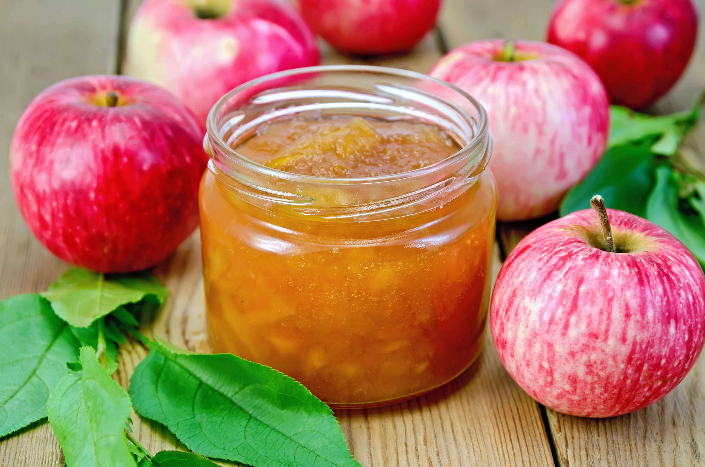
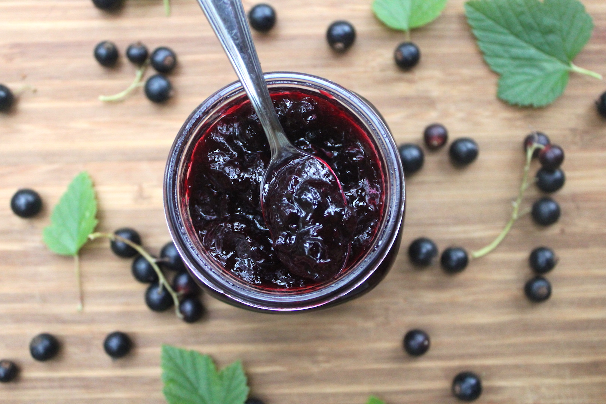
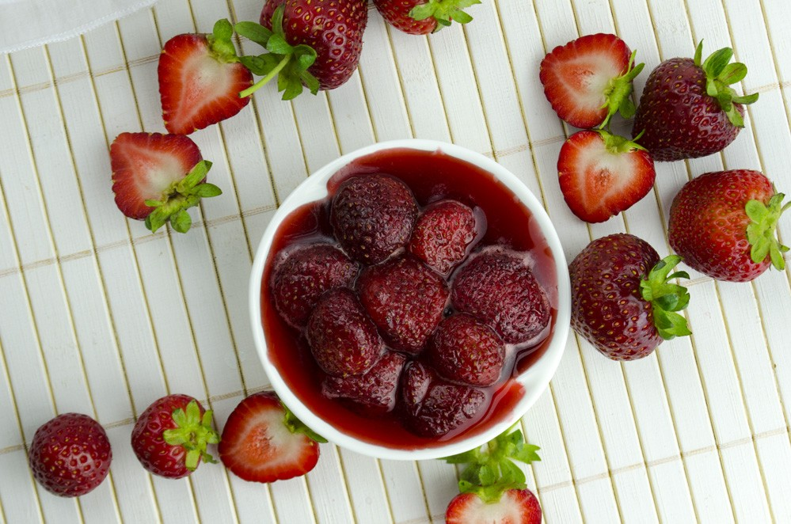
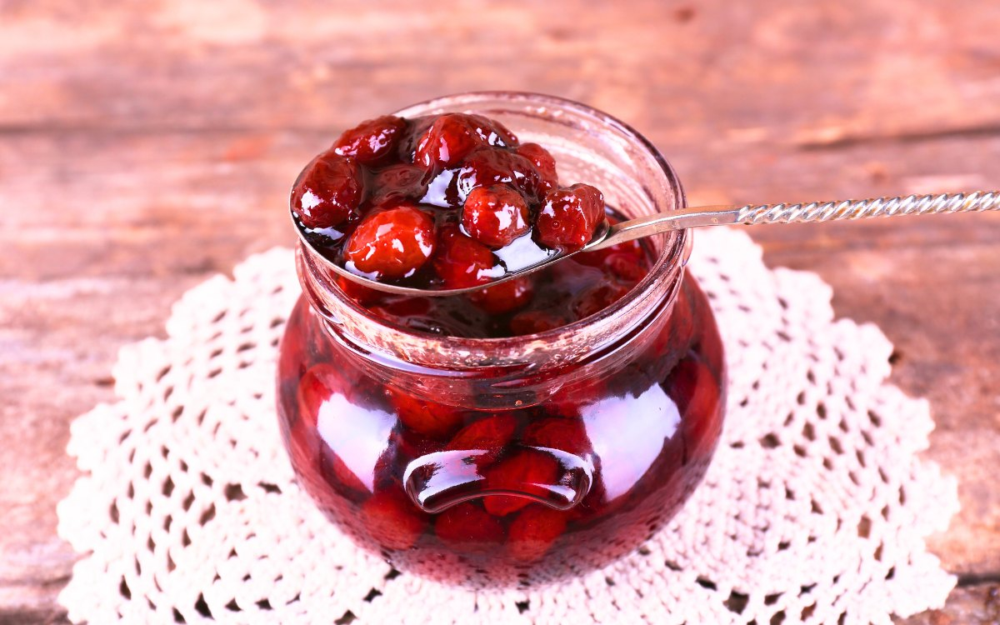

Ābolu ievārījums ar kanēli
Sastāvdaļas:
- 1 kg ābolu
- 500 g cukura
- 1 tējk. kanēļa
- ½ citrona sula
Pagatavošana:
- Nomizo un sagriez ābolus.
- Sajauc ar cukuru un atstāj ievilkties.
- Vāri ~30 min.
- Pievieno kanēli un citrona sulu.
- Pildi burkās.

Sarkano jāņogu ievārījums
Sastāvdaļas:
- 1 kg jāņogu
- 800 g cukura
- 200 ml ūdens
Pagatavošana:
- Noskalo ogas un attīri no ķekariem.
- Vāri ar ūdeni 10 min.
- Pievieno cukuru un vāri 20 min.
- Pildi burkās.

Zemeņu ievārījums
Sastāvdaļas:
- 1 kg zemeņu
- 700 g cukura
- 1 vaniļas pāksts
Pagatavošana:
- Saspaidi zemenes.
- Sajauc ar cukuru un atstāj ievilkties.
- Vāri 25–30 min.
- Pievieno vaniļu.
- Pildi burkās.

Ķiršu ievārījums
Sastāvdaļas:
- 1 kg ķiršu
- 600 g cukura
- 100 ml ūdens
Pagatavošana:
- Noņem kauliņus.
- Uzvāri ķiršus ar ūdeni.
- Pievieno cukuru un vāri 35 min.
- Pildi burkās.
